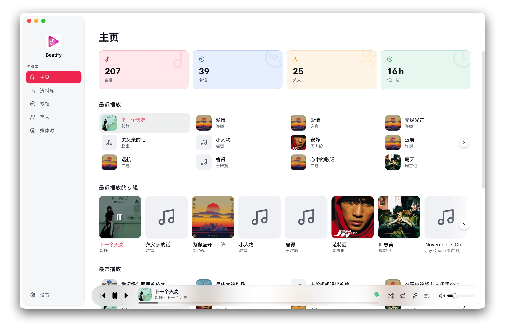

资料库
本地文件，远程目录，一个入口。
添加电脑里的音乐文件夹，或连接 WebDAV 服务器。文件变化后，资料库会自动更新。
本地优先的桌面音乐播放器
Beatify 为本地文件夹与 WebDAV 而做。没有账号，没有订阅，也没有把你锁进某个平台。打开它，音乐就在那里。

核心体验
常用的入口保持清楚，复杂的事情交给 Beatify。资料库、队列、歌词和外观，都在需要的时候出现。
资料库
添加电脑里的音乐文件夹，或连接 WebDAV 服务器。文件变化后，资料库会自动更新。
歌词
读取 LRC 时间轴，全屏歌词会平滑滚动并高亮当前一行，封面则安静地留在背景里。
播放队列
待播与历史固定在侧边栏。随机和循环设置会记住上次的选择，下次打开继续播放。
外观与语言
浅色、深色或跟随系统，启动前就完成切换。中文与 English 也可以即时切换，无需重启。
真实界面
从整理资料库到打开全屏歌词，每个视图都保持同一套清楚、安静的信息层级。
你的资料
本地存储资料库数据库、封面缓存与设置都保存在系统应用数据目录中。
开源透明代码采用 MIT 协议，可自由使用、修改和分发。
跨平台同一套 Beatify 可用于 macOS、Windows 和 Linux。